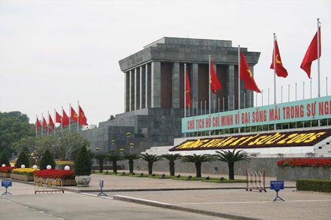
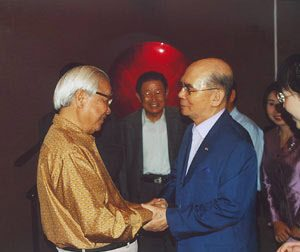

보도일 2015-06-19출처 조선일보 프리미엄조선 연재
2010년 1월 하순, 박태준은 3박4일 계획으로 베트남 하노이를 방문했다. 그의 인생에서 네 번째 베트남 방문을 환영하듯 마침 하노이 시가지에는 ‘수도 천 년’의 경축 현수막들이 축제 분위기를 자아내고 있었다. 미군의 무자비한 폭격을 받아 거의 석기시대로 돌려졌던 베트남의 수도, 그 중심가에 1996년 현대식 특급호텔이 들어섰다. ‘하노이대우호텔’이다.
박태준은 한국 경제계의 후배 김우중이 세운 호텔에 여장을 풀었다. 하노이대우호텔을 세울 때만 해도 “세계는 넓고 할 일은 많다”며 글로벌 경영의 기세를 펼치는 김우중에게 그 입지를 추천한 이가 바로 박태준이었다. 왜 그는 후배에게 하노이의 요지를 추천할 수 있었을까?
박태준이 생애 처음 하노이(베트남)를 방문한 때는 1992년 11월 하순이었다. 한국정부와 베트남정부의 수교(1992년 12월 22일) 협상이 한창 무르익고 있던 그때, 박태준은 정장 차림으로 하노이 바딘광장부터 찾았다. 호찌민(胡志明) 영묘 참배. 그는 박정희의 한국경제가 베트남에게 졌던 ‘불행한 빚’을 자신이 앞장서서 갚아야겠다는 결심을 세우고 있었다.
한국이 극단적 냉전체제의 최전선을 통과하면서 산업화에 몰두한 시절에 감행했던 월남(베트남) 파병. 그는 베트남전쟁의 특수를 활용해 경제발전에 먼저 성공한 한국이 베트남에 투자하는 것은 베트남에 대한 한국의 빚을 갚아나가는 길이고 한국의 도덕성을 높이는 길이라는 확신도 갖고 있었다.

바딘광장을 나선 박태준은 베트남 최고지도자와 만났다. ‘도이모이’라는 개방정책을 이끄는 두 모이 당서기. 주인은 경제개발 방향에 대해 묻고, 손님은 한국 경험의 장단점을 간추렸다. 두 모이의 작별인사는 특별했다. “내가 왜 이리 늦게 당신을 만나게 되었는지 원망스럽군요.” 그리고 그는 보반 키엣 총리도 만났다. 연산 20만 톤 규모의 전기로 공장, 파이프공장, 하노이-하이퐁 고속도로 건설 등에 기본적인 합의를 했다.
베트남으로 진출하려는 박태준의 선구적 구상. 문제는 한국의 정치권력이었다. 과연 그것이 그에게 포스코 경영에 대한 권한을 언제까지 보장할 것인가?
박태준과 두 모이의 만남은 그의 하노이대우호텔 입지 추천으로 이어졌지만, 정작 두 사람의 재회는 이뤄지지 못했다. 박태준의 베트남 구상도 골격은 무너지고 말았다. 이듬해(1993년) 3월, 김영삼 정권의 출범과 거의 동시에 정치적 박해를 받은 그가 기약 없는 해외 유랑의 길에 올랐던 것이다.

다시 박태준의 베트남 방문이 이뤄진 것은 첫 방문으로부터 꼬박 12년이 지난 2004년 11월이었다. 호찌민(옛 사이공)을 찾은 일흔일곱 살의 포스코 명예회장은 1993년 3월부터 1997년 5월까지 이어진 자신의 해외 유랑과 더불어 물거품처럼 사라진 ‘베트남 구상’을 회상했다.
‘그때 그런 일만 없었더라면 이 땅에서 많은 일들을 이루고 박정희 대통령 시절에 만든 역사적 부채도 갚고 우리의 도덕성도 높이는 일거삼득을….’
12년 전 베트남 지도자들과 공유했던 희망과 약속이 희수(喜壽)의 영혼에 회한을 일으켰다.
<②편에 계속>